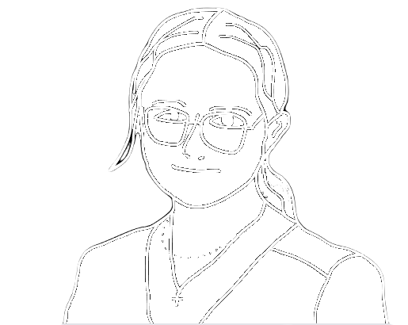

Léa Cortet
Qui suis-je ?
Je suis actuellement étudiante à l'IUT de Nantes en première année de BUT informatique. J'aime bien sortir de chez moi de tant à autre afin de passer du temps mes amis, mais sinon je me contente de jouer aux jeux-vidéos, de peindre ou encore de faire de l'escalade.
Je suis une fan absolue de l'univers Cyberpunk que je trouve absolument magnifique. Mon jeu de prédilection est donc bien entendu Cyberpunk 2077. Mais j'apprécie aussi énormément les FPS comme Valorant et j'aime également découvrir de nouveaux jeux.
Une future Corporate dans le monde de l'Informatique ?
Je suis un peu perdue sur ce que j'aimerai faire plus tard, mais travailler dans le monde de l'informatique me paraît comme une évidence. Concernant le domaine, c'est là que ça se complique. J'ai toujours beaucoup aimé la créativité et le design et ce n'est pas une chose simple de l'associer à de l'informatique purement pratique.
M'affirmer dans le monde de l'Informatique en tant que femme est selon moi un challenge pas forcément évident. On peut se sentir un peu seule parfois, et la mixité est quelque chose d'important selon moi. J'espère donc que dans le futur plus de femmes se lanceront dans ce domaine.
Quelques projets de ma création
Projet quadtree
Ce projet a été réalisé avec la collaboration de Sacha Chauvel, dans le cadre de la ressource R1.01 et de la SAÉ implémentation d'un besoin client SAE1.01. Le but de ce projet était de créer un mini jeu en vue de les associer avec un arbre de donnée "quadtree" pour sotcker la carte du jeu.
Ce projet a été pour moi mon premier gros projet que ce soit en terme de quantité de code ou bien de complexité algorithmique, cela m'a notament poussé à apprendre à mieux utiliser git, que ce soit pour retourner en arrière sur d'anciens commits, mais aussi pour un meilleur travail d'équipe. Le projet est d'ailleur disponible sur le github de Sacha bien qu'il est été majoritairement developper dans un repositry gitlab privé.


Nous avons bien entendu implémenté certaine des extention demandé comme les portails ou la sauvegarde du monde, mais nous nous somme permis quelques extra quand à la consigne de la génération aléatoire, en effet au lieu de simplement choisir aléatoirement la valeur des tuiles, j'ai choisi de coder un algorithme de génération procedural de donjon.
L'algorithme que j'ai choisi reste assez simple puisque c'est un algorithme basé sur un arbre binaire nommé arbre BSP (Binary Space Partition). J'ai utilisé le site roguebasin comme documentation pour l'implementation de cet algorithme.
Projet brainf
Le but de ce projet étais de créer un interpreteur brainf le plus complet possible en go sans utiliser de documentation autre que sa page de wiki diponible sur esolangs.
C'était un projet assez court (seulement une semaine de developpement), le but étais surtout de me challenger et de revenir sur un defi que je m'étais lancer environ un ans au paravent qui était de faire un interpreteur brainf en C sans documentation, défi que je n'avazis pas réussi à l'époque.
Je ferais une release de ce projet sur mon github quand je serais pleinement satisfait du résultat, j'aimerais en effet paufinié la documentation du projet ainsi que certains tests.
Mention spéciale à mon univers adoré
Voici une galerie photo afin que vous apréciez vous aussi ces merveilles visuelles.
GameBoy RPG
Je n'ai jamais vraiment fini ce projet, et bien que je compte me ré-attaqué au game dev retro (que ce soit sur GameBoy ou GameBoy Advence), je pense que je ne retoucherais pas à ce projet.
Bien qu'il ai était très plaisant d'apprendre à compiler pour la GameBoy, les outils et la documentation ont eux beacoup viellis, rendant le processus de création de sprite et tile-map très long et peu pratique. Le manque de documentation du GameBoy devkit a achever ma motivation.

Le projet reste tout de même disponible sur ma page github à titre historique.
Conway Game of Life en C

Ce projet est un de mes tout premier projet "fini", cependant ce dernier est aussi truffé de bug et meriterais un bon nettoyage. Comme son nom l'indique, le but étais recréer le jeu de la vie créer par le célèbre mathématicien Conway. Le jeu de la vie est très certainement l'automate cellulaire le plus connus.
Le code du projet est toujours diponible sur ma page github, bien que je ne garentis pas qu'il soit encore fonctionnel.